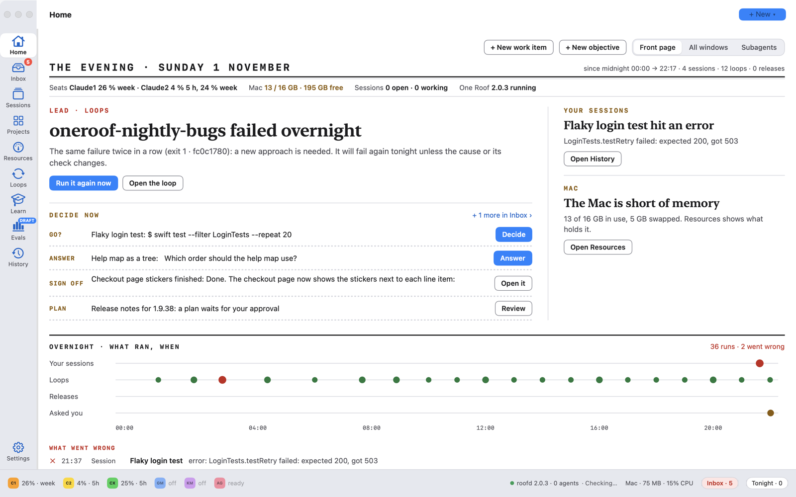
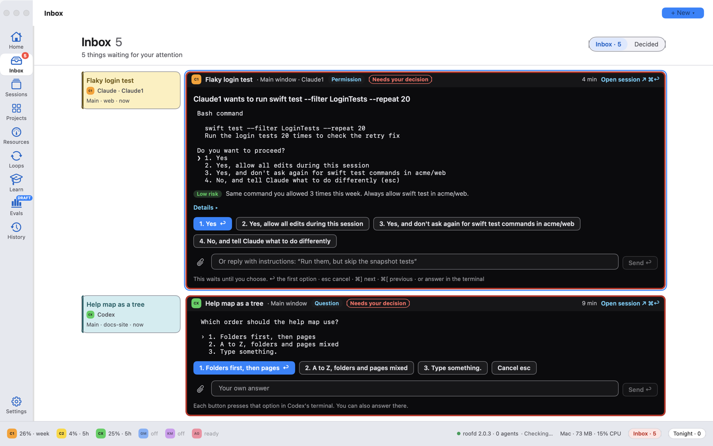
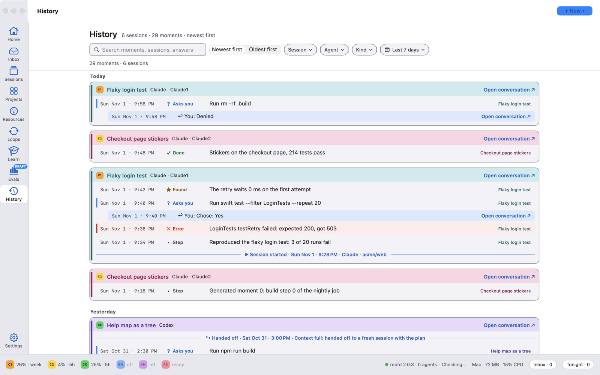
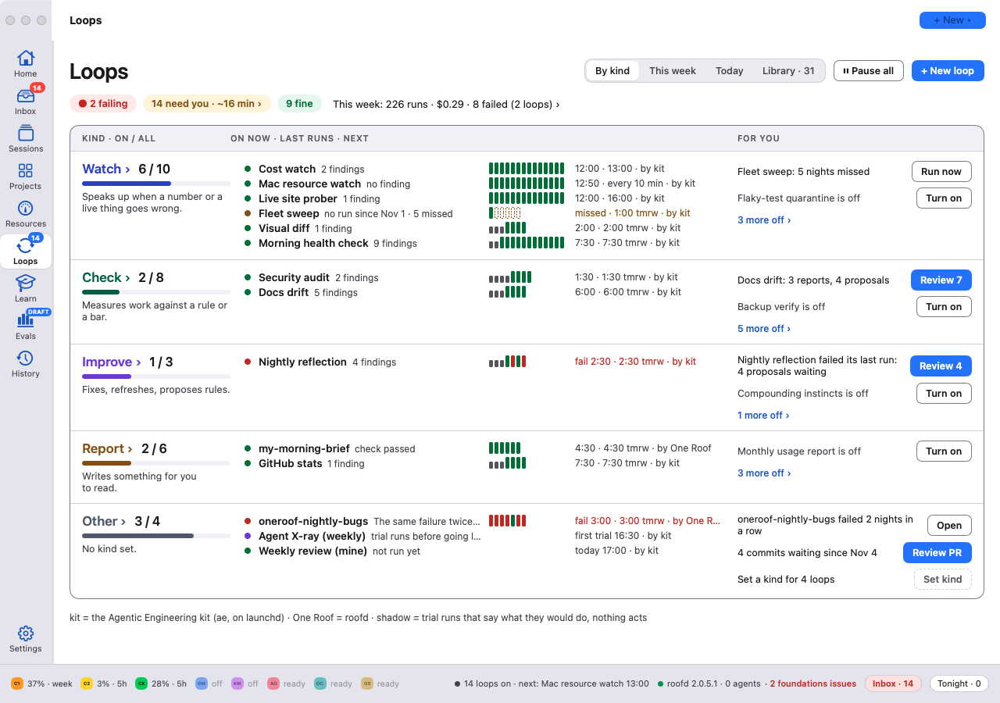
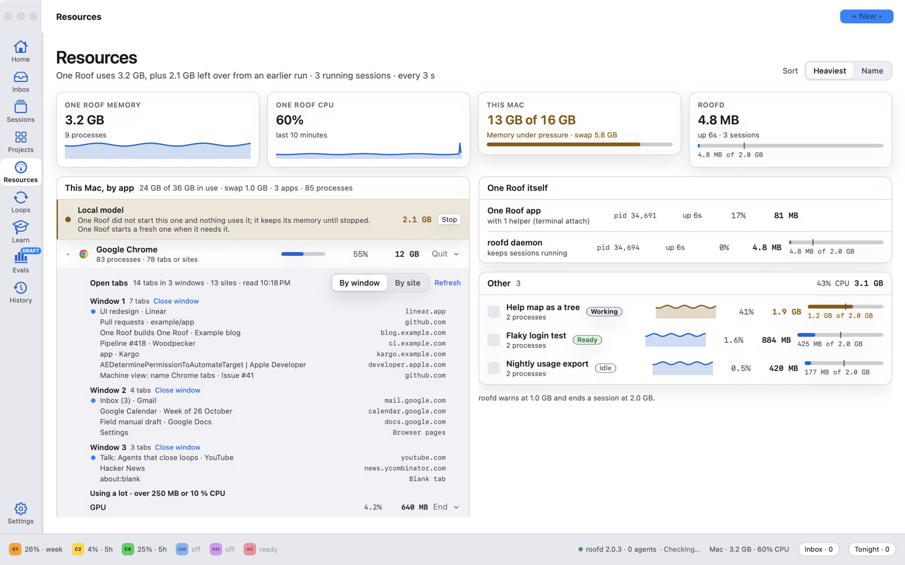
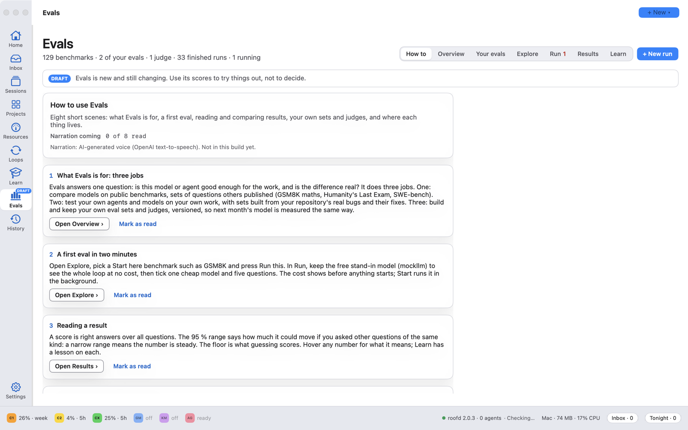

The agents aren’t the bottleneck anymore.
You are.
One Roof is a new kind of way to build with agents: one place to keep up, and you stay in charge. It isn’t an IDE, nor is it a terminal. It’s the place your whole team of agents works, from Claude Code and Codex to Gemini, Kimi and Antigravity, with everything they ask, run, learn and cost.

The agents you already pay for, in one window. One Roof finds the agent command-line tools on your Mac and the accounts you are signed in to. It does not replace them: each session runs the real tool, and you can always type straight into it. Optional: OpenCode and Goose on a hosted model with your own API key and a spending cap.
See it in under three minutes.
Why one agent isn't enough, then a tour: Home, All windows, the Inbox, a running session, Linear projects, Resources, loops, Learn, Evals and History.
Several agents on one job. The hard part is keeping up.
I call it chorus coding: several coding agents on the same piece of work, each doing the part it does best, one checking another. One plans, one builds, one reviews. A loop re-runs the tests every night.
The agents are not the bottleneck any more. You are. Five terminals look the same. A question waits in a tab you are not looking at. Something failed at 3 AM and nobody told you. The Mac slows down and you do not know which session is to blame.
One Roof is the app I built to keep up with that, and to stay the one who decides.
Six things that go wrong with many agents, and what One Roof does about each.
Each one is easy with one session. Each one adds up with five.
Questions get lost
An agent stops to ask something, in a tab you are not watching, and waits for an hour.
→ The Inbox: every ask from every session in one place, the urgent ones first, answered in place. 02You miss what happened overnight
Loops and long sessions ran while you slept. Which ones failed, and what now?
→ Home: a morning front page with what went wrong, what to do next and what ran fine. 03Nobody reads the whole stream
Reading every agent's output is a full-time job.
→ History: the important moments of each session, as short cards, with what you answered. 04Every terminal looks the same
You end up typing WIP: in front of tab names to tell them apart.
→ Sessions: each one labelled with its state, agent, account and folder, and its own colour. 05The Mac slows down
One session's processes quietly grow to several gigabytes.
→ Resources: memory and CPU per session and per app, with a guard that stops a runaway session. 06Agents act before you look
An agent edits files or runs commands you did not expect.
→ Permissions per agent. On a new Mac every agent starts in Manual and asks first.A rail of places, each with one job.
A front page for the morning.
The page at the top of this one. Built from your own sessions and loops. The lead story is the thing that matters most. Decide now lists what waits on you, one button each. The overnight timeline shows every run since midnight as a dot, and under it: What went wrong (each failure once), What to do next (up to three steps) and Ran fine (repeats folded, such as "Cost watch ×12").
Everything the agents ask you, in one column.
One block per session that needs you, with the prompt's own options as buttons (or press 1–9). When an agent is blocked until you act, its block gets a red border and goes to the top. A finished turn waits here too, with a reply box; paste a screenshot and the agent reads it. Nothing is approved for you, and you can always answer in the terminal instead. Decided keeps what you answered, newest first.

Real terminals that keep running.
Every agent session and plain shell, grouped by state: Needs you, Active, Next, Planned, Exited. Each row shows the agent, the account, the folder and a live one-line status. Show one terminal, a grid or a wall. Sessions run inside roofd, a small background service, so they keep going when you close the app, and come back with their screens when you open it again.
What happened while you were away.
A read-only record of each session's important moments: steps, findings, errors, what the agent asked and what you answered, hand-offs between sessions. Each session's run of moments is one card, in its own colour. Search it, or filter by session, agent, kind and date. Kept for 30 days.

Work that repeats until a check passes.
A loop gives an agent a goal and a check, such as "until the tests pass" or "every night at 3". One Roof runs the check, starts another round when it fails, and stops at a limit. The agent works in the loop's own copy of the repo, never in yours. What a loop produces waits in the Inbox for your approval.
The Loops page opens on your loops by kind (Watch, Check, Improve, Report), each with its last runs and what it needs from you. It shows which runs were missed, what is running now, this week day by day, and every run's report. Loops run by the Agentic Engineering kit and by One Roof show side by side, each with its real state.

See which session is slowing the Mac.
Memory and CPU for each session, for One Roof itself and for every app on the Mac, with 10-minute charts. A browser shows its windows and tabs, and you can close a tab or a window from here. roofd warns when a session grows past 1 GB and ends it at 2 GB, before it can freeze the Mac.

What can you trust to do your work?
Still a draft, and marked as one in the app. Your work comes in two kinds: one-shot jobs (one prompt to a model) and agent jobs (an agent on your code, with your rules). For each, one bar shows where the evidence comes from: public tests, your own tests built from your repo's fixed bugs, and every run of your loops. Click a colour to see it: one square per bug, a blind-guess line, "can't tell yet" when the bugs are too few, whether your last change helped, and what git says about each agent's real work.

Two more places, both optional.
Your Linear projects and tickets
Teams, projects by status, and each project's roadmap. Only if you connect Linear with your own API key; without it, Projects shows a single Connect Linear card.
A course on agentic engineering
The narrated Agentic Engineering deck and a timeline of papers that shaped coding agents. Listen in the app. The narration is an AI-generated voice, and says so.
Safe by default.
One Roof never decides for you. These are the defaults on a new Mac.
Manual first
Each agent has one permission mode: Manual, Plan, Auto or Full. On a new Mac every agent starts in Manual and asks before it edits a file or runs a command. You change it per agent in Settings › Permissions.
Nothing is approved for you
The Inbox shows the agent's own options. You press one, or answer in the terminal. Loops stage their results for your approval and never merge on their own.
Your folders, not your home folder
Setup asks for the folder that holds your code, or offers to create ~/Projects. One Roof never scans your home folder, so macOS does not ask about Desktop, Documents or Downloads.
Sessions survive the app
roofd keeps your sessions running when One Roof is closed or updated. A crash in one session ends only that session.
No keys in the app
The app ships no keys, no tokens and no datasets. Linear, hosted models and gated benchmarks use your own accounts, only if you add them.
Signed and open
Signed with an Apple Developer ID and notarized by Apple. The full source is on GitHub under the MIT licence.
Not tied to one vendor's agent.
Agents differ in what they are good at, which model they bring and how much room is left on each subscription. Each vendor's own app keeps you inside that vendor's agent.
One Roof is no vendor's. Claude Code, Codex, Gemini CLI, Kimi and Antigravity run side by side. The bar at the foot of the window shows how much of each subscription is used, so you can pick the agent with room left.
Use the right agent for each part of the job, and keep track of all of them.
One download. A few minutes.
Apple silicon · macOS 14+ · git · at least one agent command-line tool, signed in
Download the app
Unzip it and drag One Roof to Applications.
Signed and notarized by Apple: it opens like any other app.
DOWNLOAD .ZIPRun the setup
The first launch finds the agents you are signed in to, asks for the folder that holds your code, and lets you pick a look. macOS asks once to allow roofd, the background item that keeps sessions running.
claude · codex · gemini · kimi · agy
Start your first session
Press ⌘N, say what should happen, pick the agent and the repo, and launch. When it asks you something, it shows up in the Inbox.
⌘N new session · ⌘↩ launch
Build from source
Swift 6, Xcode 26. The README walks through the build. github.com/gaurav8936/oneroof
Every agent reads the same rules.
Agents only stay consistent if they start in the same folder and read the same rules and notes. The kit sets that up for every agent, and works from the command line with or without the app. roof install puts it in place; roof doctor checks every layer.
git clone https://github.com/gaurav8936/oneroof ~/oneroof ~/oneroof/bin/roof install roof doctor # checks every layer, live
The agents do the work. You keep up, and you decide.
Free and open source. Bug reports and ideas are welcome on GitHub.